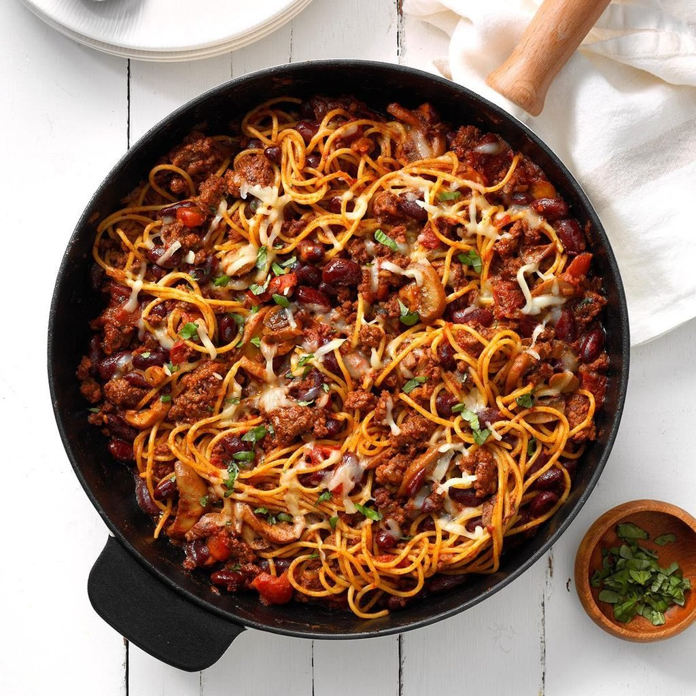

Chili Ghetti
A real spice one and excellent fot the unexpected guests meals

Ingredients
- 1 package (7 ounces) spaghetti
- 1 pound ground beef
- 1 small onion, chopped
- 1 can(16 ounces) kidney beans, rinsed and drained
- 1 can (14-1/2 ounces) no-salt-added diced tomatoes, undrained
- 1 can (4 ounces) mushroom stems and pieces, drained
- 1/3 cup water
- 1 envelope chili seasoning
- 2 tablespoons grated Parmesan cheese
- 1/4 cup shredded part-skim mozzarella cheese
Steps
- Cook spaghetti according to package directions. Meanwhile, in a large skillet,
cook beef and onion over medium heat until meat is no longer pink; crumble beef; drain.
- Drain spaghetti; add to beef mixture. Stir in the beans, tomatoes, mushrooms,
water, chili seasoning and Parmesan cheese. Cover and simmer for 10 minutes. Sprinkle with mozzarella cheese.
<-- Back to home